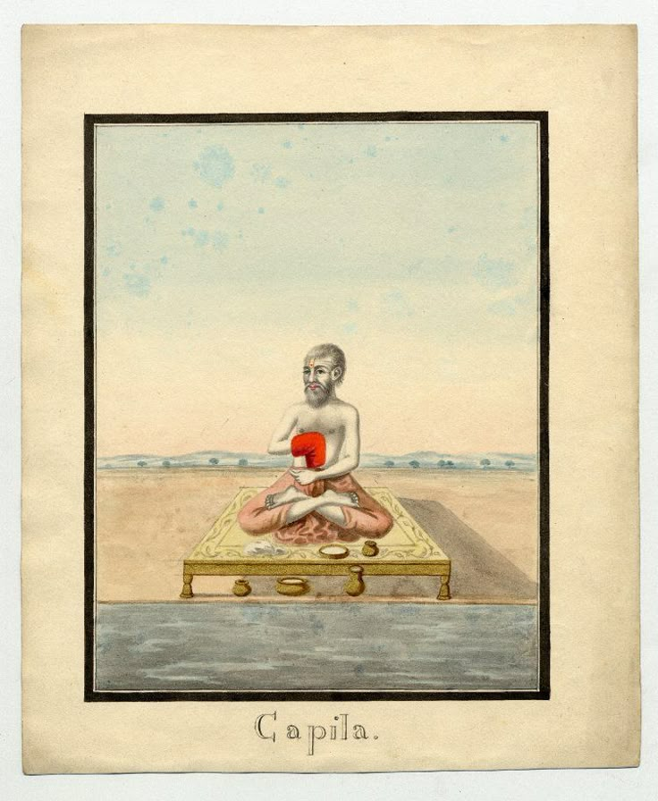

Who Was Kapila?
Kapila, often honored with the title Kapila Muni, was an ancient Indian sage traditionally credited as the founder of Samkhya , widely regarded as one of the oldest systematic philosophies of the Indian subcontinent. His exact historical period remains uncertain, with different traditions placing him anywhere from the seventh century BCE to a much earlier, more legendary antiquity.
Kapila is especially associated with offering one of the earliest fully worked-out explanations of how a conscious observer relates to the material world it observes. Rather than beginning from questions about ritual or scripture, the philosophy attributed to him starts from a direct analysis of experience itself, asking what remains constant behind the ever-changing flow of thought, feeling, and physical sensation.
According to the Samkhya tradition, Kapila taught that reality can be understood through two eternal and fundamentally different principles: Purusha, pure consciousness, and Prakriti, primal matter or nature. From the interaction of these two principles, the entire visible and invisible universe, including mind, intellect, and the physical body, is said to unfold in an orderly sequence of evolutes.
Because Kapila left no surviving work confirmed to be in his own hand, historians rely on later systematic texts, especially the Samkhya Karika of Ishvarakrishna, to reconstruct the philosophy attributed to him. His importance nonetheless remains foundational, since Samkhya's core categories quietly shaped later Indian philosophy, medicine, and yoga far beyond the boundaries of Samkhya as a formal school.
Kapila: Quick Facts
- Name — Kapila (Kapila Muni)
- Period — Uncertain; traditionally placed in deep antiquity, possibly c. 7th century BCE or earlier
- From — Traditions vary; often associated with the region near the Ganges delta in eastern India
- Philosophical period — Early Vedic and pre-classical Indian philosophy
- Associated with — Samkhya philosophy and Purusha-Prakriti dualism
- Known for — The twenty-five tattvas, or principles of reality, and the theory of the three gunas
- Key later text — The Samkhya Karika of Ishvarakrishna
- Legendary status — Referred to in the Bhagavad Gita as an accomplished being among the perfected
- Traditional disciple — Asuri
- Historical importance — Founder of one of the oldest systematic schools of Indian philosophy
Kapila and the Origins of Systematic Indian Philosophy

Kapila is traditionally placed at a very early point in the development of Indian philosophy, at a time when much of Vedic thought was still organized around ritual hymns, cosmological speculation, and the teachings later gathered into the Upanishads. Within this environment, the philosophy attributed to Kapila stands out for its unusually systematic and analytical character, breaking reality down into a precise and orderly set of categories rather than relying primarily on poetic or mythic expression.
Samkhya's emphasis on careful enumeration and classification of the principles of existence gives it a strongly rationalist and almost proto-scientific character among the ancient schools of Indian thought, and this feature is often highlighted by scholars as one of the reasons Samkhya exerted such wide influence over later Indian systems, including several schools that did not otherwise share its metaphysical conclusions.
Kapila's ideas developed alongside and in dialogue with the wider landscape of early Indian philosophical inquiry, a period that also produced early forms of Yoga practice, the beginnings of Vedanta interpretation, and the ascetic and renunciate movements from which both Buddhism and Jainism would later emerge. Samkhya is frequently discussed as one of the oldest of the six classical schools, or darshanas, of orthodox Hindu philosophy.
In the tradition associated with Kapila, philosophical inquiry therefore combined careful conceptual analysis with a deeply practical goal: identifying precisely how consciousness becomes entangled with matter, so that a clear philosophical map of that entanglement could serve as the foundation for achieving genuine liberation from suffering.
Who Was Kapila and What Did He Do?
Relatively little can be established with historical certainty about Kapila's life, and different textual traditions offer varying and sometimes conflicting accounts of his origins, teachers, and activities. Some traditions describe him as a divine or semi-divine sage born directly with perfected wisdom, while others present him within a more human lineage of teachers and students.
Puranic literature associates Kapila with a hermitage near the place where the Ganges river meets the sea, an area still venerated today as Gangasagar or Sagar Island, where pilgrims gather for a major annual festival connected with his memory. According to one well-known legend recorded in later texts, Kapila's intense ascetic power was responsible for reducing to ashes the sixty thousand sons of King Sagara, an episode later resolved through the descent of the river Ganga to earth.
Ancient tradition names Asuri as Kapila's principal disciple, through whom his teachings are said to have been transmitted onward to later generations of Samkhya teachers, eventually reaching the systematizer Ishvarakrishna, whose surviving verses form the primary textual basis for later understanding of the school.
Kapila is also mentioned with clear reverence within the Bhagavad Gita, where Krishna identifies himself among the perfected beings as Kapila, describing him as foremost among those who have attained spiritual accomplishment, a passage often cited as evidence of Kapila's already well-established reputation by the time the Gita reached something close to its present form.
What can be established more securely than the details of any single biography is the depth and durability of Kapila's reputation across many centuries of Indian religious and philosophical literature, and the continued pilgrimage tradition centered on the site associated with his hermitage.
What Did Kapila Believe?
Reconstructing Kapila's philosophy directly is difficult because no work confirmed to be his own original composition survives intact. What is known as classical Samkhya reaches us primarily through later systematizing texts, especially the Samkhya Karika, composed by Ishvarakrishna many centuries after the tradition's founding figure is said to have lived.
At the heart of the philosophy attributed to Kapila lies a strict dualism between two eternal and fundamentally distinct principles. Purusha refers to pure consciousness, an inactive witness that never itself changes, acts, or is affected by experience, while Prakriti refers to primal, unconscious nature, the single source from which the entire changing universe, including matter, mind, and intellect, ultimately evolves.
According to this system, ordinary human experience arises from a kind of confusion in which Purusha mistakenly identifies itself with the activities and sufferings of Prakriti, particularly with the workings of the mind and intellect. Suffering, in this view, is not fundamentally about external circumstances but about this deep confusion between the true, unchanging witness and the ever-changing psychological and physical apparatus it has come to identify with.
Liberation, or kaivalya, is achieved in Samkhya not through ritual action or devotional worship but through discriminative knowledge, or viveka, the precise intellectual and experiential capacity to distinguish Purusha from Prakriti so completely that consciousness ceases to misidentify with the fluctuations of nature and rests in its own true, isolated awareness.
Scholars continue to debate how much of the fully developed classical system found in the Samkhya Karika should be attributed to Kapila himself as opposed to later systematizers who refined and formalized an older, looser body of teaching, but the foundational dualist insight is consistently traced back to Kapila across the tradition's own textual memory.
What Is Samkhya Philosophy?
Samkhya, a Sanskrit term often translated as "enumeration" or "reckoning," is the philosophical system founded by Kapila that explains the whole of reality through a precise, numbered list of fundamental principles, or tattvas , unfolding from the interaction of Purusha and Prakriti.
Samkhya is traditionally counted as one of the six classical schools, or darshanas, of orthodox Hindu philosophy, standing alongside Yoga, Nyaya, Vaisheshika, Mimamsa, and Vedanta. Among these, Samkhya is widely regarded by scholars as among the oldest in origin, and its basic conceptual vocabulary, including the very idea of Purusha and Prakriti, deeply influenced the later development of Yoga philosophy in particular.
Unlike several later Vedanta schools, classical Samkhya is typically described as a strongly dualist and, in its most classical form, non-theistic system, focused on explaining the origin and structure of the experienced world without requiring a creator God to initiate the evolution of Prakriti into its many forms.
It is therefore more accurate to describe Samkhya as a rigorous analytical framework for mapping consciousness and matter than as a devotional or ritual system in its own right, though later Samkhya-influenced traditions, including many strands of Yoga, often incorporated a personal deity or ultimate teacher figure into an otherwise Samkhya-based cosmology.
What Are Purusha and Prakriti in Kapila's Philosophy?
Purusha, in Kapila's system, refers to pure, unchanging consciousness, described as a silent witness that never itself acts, thinks, or transforms. Samkhya famously teaches that there are, in fact, countless individual instances of Purusha, each one an eternally distinct center of pure awareness rather than a single universal consciousness shared by all beings.
Prakriti, by contrast, refers to primal, unconscious nature, the single ultimate source of matter, mind, intellect, sensation, and every other component of the experienced universe. Prakriti itself is said to exist in a state of perfect equilibrium among three fundamental qualities, or gunas, before evolution into the manifest world begins.
The three gunas, sattva, rajas, and tamas, correspond respectively to qualities of clarity and balance, activity and passion, and inertia and darkness. According to Samkhya, when the natural equilibrium of the three gunas within Prakriti is disturbed, typically explained as occurring in the mere proximity of Purusha, the process of cosmic evolution begins, unfolding through the sequence of twenty-five tattvas that make up the entire Samkhya universe.
This distinction is important because it treats consciousness and matter as two entirely separate categories of reality rather than variations of a single underlying substance, a position that later Vedanta philosophers, including both Shankaracharya and Madhvacharya, would each engage with and ultimately reject in their own distinct ways.
For Kapila's system, correctly recognizing this fundamental separation between the passive witness of Purusha and the active unfolding of Prakriti is not merely an abstract philosophical exercise but the very key to liberation, since confusion between the two is identified as the root cause of all bondage and suffering.
The Twenty-Five Tattvas of Samkhya Philosophy
Samkhya philosophy is especially known for its precise enumeration of exactly twenty-five tattvas, or fundamental principles, that together account for the entire structure of reality as experienced by an individual consciousness.
At the top of this list stand Purusha and Prakriti themselves, followed by mahat or buddhi, the cosmic and individual intellect, ahamkara, the principle of egoity or self-identification, and manas, the mind that coordinates sensory experience. From these evolve the five subtle sensory capacities, the five capacities of action, the five subtle elements, and finally the five gross physical elements that make up the material world.
This ordered sequence of evolution, moving from the subtlest principle of consciousness down to the grossest physical matter, gives Samkhya a distinctly systematic character, allowing later thinkers to trace precisely how an individual's psychological experience, physical body, and surrounding material environment are all understood to relate to one another within a single coherent framework.
The enumeration of the tattvas also served an important practical function within the tradition, providing later practitioners, especially within Yoga, with a detailed map for identifying exactly which layer of experience needed to be understood and transcended at each stage of spiritual practice on the way toward the discriminative knowledge that Samkhya identifies with liberation.
Kapila on Suffering, Knowledge, and Liberation
A central concern of the philosophy attributed to Kapila is the nature and origin of human suffering, which Samkhya famously divides into three types: suffering caused by one's own body and mind, suffering caused by other living beings, and suffering caused by external and even cosmic or supernatural forces.
According to Samkhya, all three forms of suffering ultimately trace back to the same underlying error: the failure to distinguish Purusha, the true witness, from Prakriti, the field of activity and change with which it becomes falsely identified. As long as this confusion persists, the individual remains bound within the cycle of experience, action, and rebirth.
Liberation, or kaivalya, literally meaning "isolation" or "aloneness," is achieved not through ritual performance or the propitiation of a deity but through viveka-jnana, discriminative knowledge that firmly and finally separates Purusha from Prakriti in direct experience, allowing consciousness to rest in its own true, untouched nature.
This emphasis on knowledge as the direct means to liberation places Samkhya within the broader current of ancient Indian traditions that treated correct understanding, rather than ritual obligation alone, as the decisive factor in spiritual freedom, a theme that would later resonate strongly with several currents of Vedanta and with the philosophical dimensions of Yoga practice.
Kapila's Influence on Yoga Philosophy
Samkhya and Yoga are traditionally described in Indian philosophy as closely paired systems, so closely associated that they are sometimes referred to together as a single combined tradition, with Samkhya providing the underlying theoretical framework and Yoga providing the practical methods for realizing it.
The classical Yoga philosophy systematized in the Yoga Sutras attributed to Patanjali adopts much of Samkhya's basic vocabulary, including the concepts of Purusha, Prakriti, and the three gunas, while adding a detailed and highly influential set of meditative and ethical practices aimed at quieting the fluctuations of the mind so that Purusha's true nature can be directly perceived.
One significant difference between the two systems is that classical Yoga philosophy incorporates the concept of Ishvara, a special and perfect Purusha untouched by affliction, as an object of meditative focus, whereas the most austere versions of classical Samkhya are usually described as non-theistic, relying entirely on discriminative knowledge rather than devotion to a personal deity.
Through this close pairing with Yoga, the philosophical framework attributed to Kapila reached an extraordinarily wide audience across the history of Indian religious practice, shaping not only formal philosophical debate but also meditative technique, traditional medicine, and popular understanding of the mind-body relationship well beyond the boundaries of Samkhya as a distinct school.
The Samkhya Karika and the Textual Legacy of Kapila
No text confirmed to have been composed directly by Kapila survives in a form scholars can verify with confidence, and several works traditionally attributed to him, including a text known as the Samkhya Sutra, are now generally regarded by scholars as considerably later compositions written in his name rather than his own original words.
The most historically important surviving text of the tradition is the Samkhya Karika, a concise set of Sanskrit verses composed by Ishvarakrishna, probably several centuries after Kapila is traditionally said to have lived. This text systematically presents the dualism of Purusha and Prakriti, the theory of the three gunas, and the enumeration of the twenty-five tattvas in a tightly organized and influential form.
Later commentators wrote extensive explanatory works on the Samkhya Karika, helping preserve and transmit its arguments to subsequent generations of students and rival philosophers, and ensuring that Samkhya remained a serious partner in philosophical debate across many centuries of Indian intellectual history, even as it gradually declined as an independently practiced school in its own right.
Because of this layered textual history, historians generally distinguish between Kapila as a legendary founding figure credited with originating the core dualist insight of Samkhya and the later systematic philosophy preserved chiefly through Ishvarakrishna's verses, treating the fully developed classical system as the collective achievement of a tradition rather than the work of one single historical author.
Kapila's Samkhya Compared with Vedanta Philosophy
Samkhya's strict dualism between Purusha and Prakriti places it in an interesting philosophical relationship with the later schools of Vedanta, including the non-dualist system of Adi Shankaracharya and the dualist system of Madhvacharya, both of which engaged critically with Samkhya categories even while rejecting Samkhya's overall framework.
Where Shankaracharya's Advaita Vedanta ultimately treats even the distinction between an individual witness-consciousness and the world as a product of ignorance to be dissolved into a single undivided Brahman, Samkhya insists on the permanent, irreducible multiplicity and reality of individual instances of Purusha, each remaining eternally distinct.
Madhvacharya's Dvaita Vedanta shares with Samkhya an insistence on the reality and permanence of difference, yet differs sharply by treating a personal, supreme God as the ultimate independent reality upon which the soul and matter both depend, a role that classical, non-theistic Samkhya does not assign to any single divine being.
This comparison illustrates how deeply Samkhya's basic categories of consciousness and matter shaped the entire subsequent landscape of Indian philosophy, providing later Vedanta thinkers with a conceptual vocabulary they would each adapt, reinterpret, and ultimately move beyond in developing their own very different accounts of ultimate reality.
Legends and Traditional Accounts of Kapila
Traditional accounts of Kapila found in the Puranas and other later religious literature present him as a figure of immense spiritual power, often identified with a partial or full incarnation of the god Vishnu sent to reveal true knowledge to the world during a particular cosmic age.
One of the most widely retold legends associated with Kapila concerns the sixty thousand sons of King Sagara, who, according to the story, disturbed Kapila during his deep meditation while searching for a stolen sacrificial horse and were reduced to ashes by the fire of his ascetic power, a story ultimately resolved through the descent of the river Ganga to earth to purify their remains.
Other traditional accounts describe Kapila delivering philosophical teaching directly to his own mother, Devahuti, a narrative preserved at length in the Bhagavata Purana, where Kapila expounds a devotionally inflected version of Samkhya philosophy blending the classical dualist framework with teachings on devotion to a personal God.
Historians of Indian philosophy generally treat these accounts as important evidence for how later religious communities understood and venerated Kapila, often blending the philosophical founder of classical Samkhya with a more devotionally reimagined figure, rather than as verified historical biography of a single consistent individual.
Kapila: Main Philosophical Ideas
Because the evidence for Kapila is layered across many centuries of textual transmission, his central philosophical ideas are often summarized under a small number of key headings drawn from the classical Samkhya tradition.
Dualism of Purusha and Prakriti
Kapila is credited with the foundational insight that consciousness and matter are two entirely distinct and eternal categories of reality, never reducible to a single underlying substance.
The Twenty-Five Tattvas
Samkhya offers a precise, ordered enumeration of the principles through which unconscious Prakriti evolves into the entire experienced universe, from intellect down to the physical elements.
The Three Gunas
Sattva, rajas, and tamas describe the fundamental qualities of clarity, activity, and inertia whose shifting balance within Prakriti drives the unfolding of the manifest world.
Suffering and Discriminative Knowledge
Samkhya traces all suffering to the confusion of Purusha with Prakriti and identifies discriminative knowledge, or viveka, as the direct means to liberation.
Influence Beyond Formal Samkhya
Kapila's dualist framework decisively shaped classical Yoga philosophy and left a lasting imprint on later Indian medicine, psychology, and metaphysical vocabulary.
What Do We Actually Know About Kapila?
Kapila is one of the clearest examples in Indian philosophy of the difficulty involved in separating a legendary founding figure from the fully developed philosophical system later associated with his name.
Relatively Well-Attested
- Kapila is consistently credited across Indian tradition as the founder of Samkhya philosophy.
- The Samkhya Karika of Ishvarakrishna is the most important surviving systematic text of the tradition traced to him.
- Samkhya is counted among the six classical schools of orthodox Hindu philosophy.
- Kapila is named with reverence in the Bhagavad Gita as an accomplished, perfected being.
- A pilgrimage tradition centered on Gangasagar continues to honor his memory.
Traditionally Reported
- His identification as a partial incarnation of Vishnu in later Puranic literature.
- The legend of the sixty thousand sons of King Sagara.
- His teaching of Samkhya philosophy to his mother, Devahuti.
- Asuri as his principal disciple and the transmitter of his teaching.
Uncertain or Disputed
- The precise period in which Kapila lived.
- Whether any surviving text can be reliably attributed to Kapila himself rather than later authors writing in his name.
- How closely the fully systematized dualism of the Samkhya Karika matches whatever teaching the historical Kapila, if he existed as a single individual, actually gave.
- Whether the non-theistic classical system and the more devotional Puranic portrait of Kapila describe the same historical figure.
Why Is Kapila Important in Indian Philosophy?
Kapila is important because he is credited with originating one of the earliest and most influential systematic frameworks in the history of Indian thought, a dualist analysis of consciousness and matter whose vocabulary would echo through nearly every later school of Indian philosophy.
His philosophical legacy raises a fundamental question that remains central to metaphysics and the philosophy of mind: Is consciousness a fundamentally different kind of reality from the material world it observes, or is it ultimately reducible to, or identical with, that world?
This question has continued to shape debates across the history of Indian philosophy, as later thinkers examined whether Samkhya's strict dualism, Vedanta's various forms of non-dualism, or other alternative positions offered the most coherent account of experience and liberation.
Kapila's importance therefore does not depend on resolving every uncertainty about his historical biography. His significance comes from his place as the credited originator of a rigorously systematic philosophical vocabulary that shaped Yoga, influenced rival Vedanta schools, and remains a foundational reference point for the study of classical Indian metaphysics.
Kapila Explained Simply
Kapila was an ancient Indian sage traditionally credited with founding Samkhya, one of the oldest systematic philosophies of India, built on the dualism of Purusha, pure consciousness, and Prakriti, primal matter.
Instead of treating the mind and the material world as aspects of a single underlying substance, Kapila's philosophy insists that consciousness and matter are two entirely separate and eternal categories, and that suffering arises when the two become confused with one another.
His system's precise enumeration of the twenty-five tattvas and the theory of the three gunas remain among the most distinctive and influential contributions of ancient Indian philosophy to the wider study of consciousness and liberation.
- Philosopher: Kapila
- Period: Uncertain; traditionally placed in early antiquity
- Tradition: Samkhya philosophy
- Major doctrine: Dualism of Purusha and Prakriti
- Central concern: The true nature and origin of suffering
- Associated practice: Discriminative knowledge (viveka)
- Key text: The Samkhya Karika of Ishvarakrishna
- Later influence: Classical Yoga philosophy
A Principle Central to Kapila's Samkhya Philosophy
“Know the difference between the seer and the seen.”
Frequently Asked Questions About Kapila
Who was Kapila?
Kapila was an ancient Indian sage traditionally regarded as the founder of Samkhya philosophy, one of the oldest systematic schools of Indian thought, built around the dualism of consciousness and matter.
What is Kapila famous for?
Kapila is famous for founding Samkhya philosophy, developing the dualist theory of Purusha and Prakriti, and originating the enumeration of the twenty-five tattvas that later shaped Yoga philosophy and much of Indian metaphysics.
What did Kapila believe?
Kapila's philosophy, as preserved through the Samkhya tradition, teaches that consciousness (Purusha) and matter (Prakriti) are two entirely distinct eternal principles, and that suffering arises from confusing the two, while liberation comes through discriminative knowledge that separates them.
What is Samkhya philosophy?
Samkhya is an ancient Indian philosophical system attributed to Kapila that explains reality through the interaction of two eternal principles, Purusha, or pure consciousness, and Prakriti, or primal matter.
What are Purusha and Prakriti in Kapila's philosophy?
Purusha is the eternal, unchanging principle of pure consciousness or witness-awareness, while Prakriti is the eternal principle of primal matter that evolves into the entire physical and mental universe; Samkhya holds that liberation comes from correctly distinguishing the two.
What are the twenty-five tattvas?
The twenty-five tattvas are the fundamental principles of Samkhya philosophy, beginning with Purusha and Prakriti and unfolding through intellect, ego, mind, the senses, and the subtle and gross elements that make up the material world.
What are the three gunas?
The three gunas are sattva, rajas, and tamas, the fundamental qualities of clarity, activity, and inertia whose shifting balance within Prakriti drives the evolution of the manifest universe in Samkhya philosophy.
How is Kapila connected to Yoga philosophy?
Classical Yoga philosophy, systematized in the Yoga Sutras attributed to Patanjali, adopts much of Kapila's Samkhya vocabulary, including Purusha, Prakriti, and the three gunas, as the theoretical foundation for its meditative practices.
Did Kapila write any books?
No text confirmed to be Kapila's own original composition survives; the most important surviving systematic text of the tradition is the Samkhya Karika, composed by Ishvarakrishna several centuries after Kapila is traditionally said to have lived.
Why is Kapila important today?
Kapila remains important because his dualist framework of consciousness and matter continues to influence the study of Yoga philosophy, Indian metaphysics, and comparative discussions of mind and consciousness in contemporary philosophy.
Related Indian Philosophers
Kapila belongs to the wider tradition of classical Indian philosophy. Explore philosophers who developed different approaches to consciousness, matter, and ultimate reality.
Philosophy Branches Connected to Kapila
Kapila's philosophical legacy is particularly important for metaphysics, where philosophers investigate the nature of consciousness and matter, and for epistemology, which examines how discriminative knowledge leads to liberation.
Why Kapila Still Matters
Kapila did not leave behind a single confirmed treatise in his own words, yet the philosophical system credited to him has shaped Indian thought more quietly and more pervasively than almost any other single tradition, embedding itself within Yoga, medicine, and rival schools of Vedanta alike.
Yet the questions associated with Kapila remain fundamental to philosophy: Is consciousness fundamentally different from matter? What is the true source of human suffering? Can precise, systematic knowledge itself become the direct path to freedom?
The Samkhya tradition he is credited with founding transformed these questions into one of the most rigorously enumerated philosophical systems of the ancient world. Its emphasis on the dualism of Purusha and Prakriti, the theory of the three gunas, and discriminative knowledge made Kapila one of the most quietly influential figures in the entire history of Indian philosophy.
Explore Great Philosophers